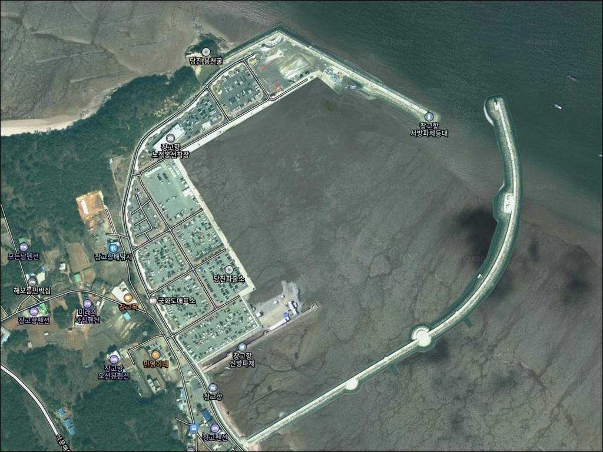
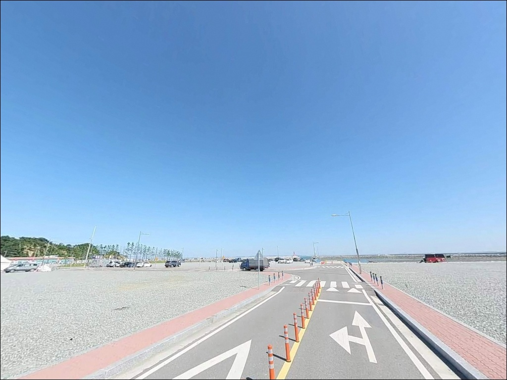
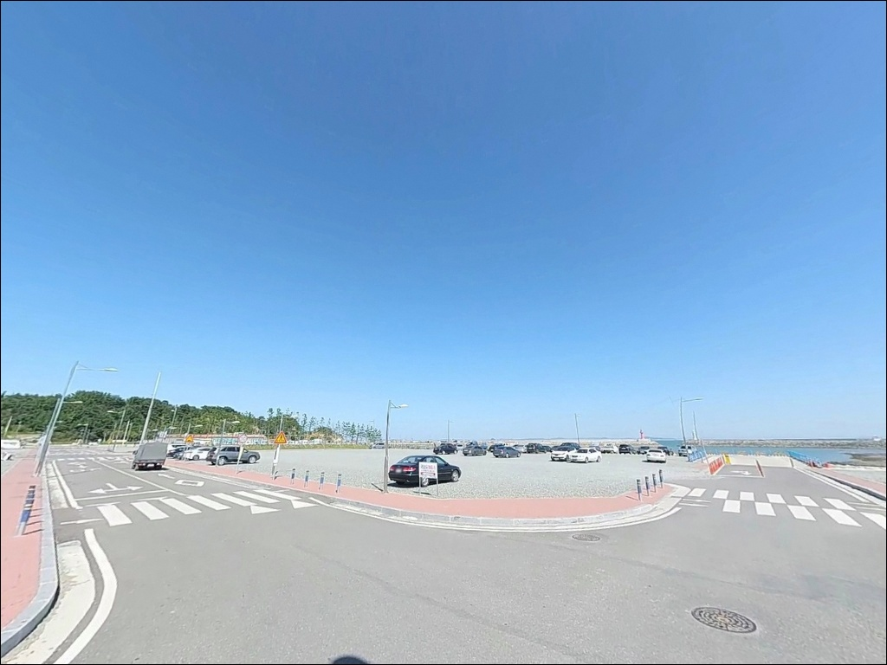
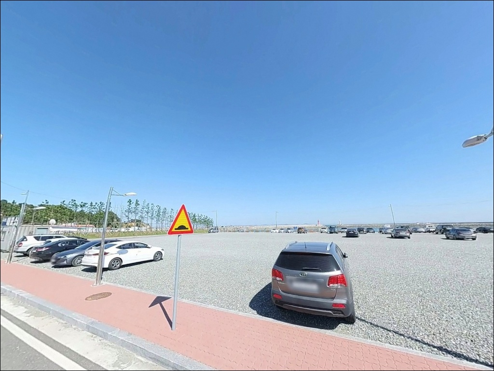
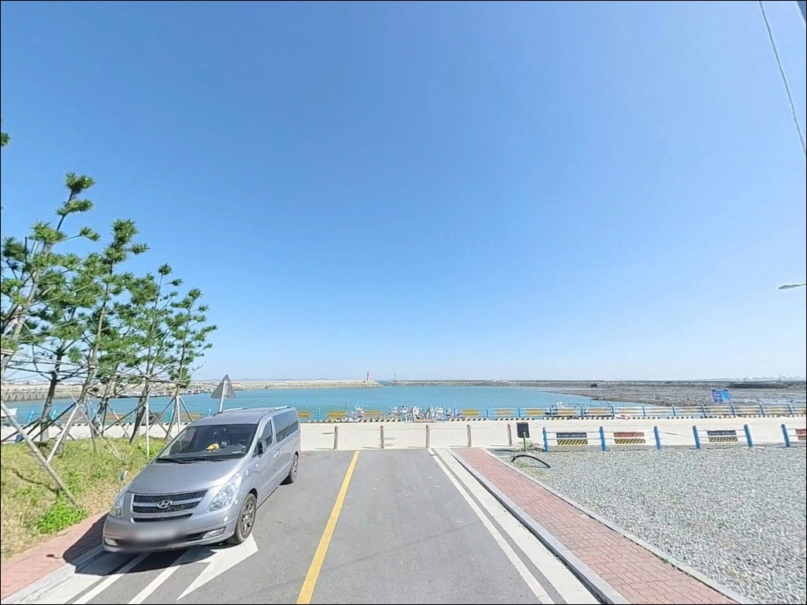
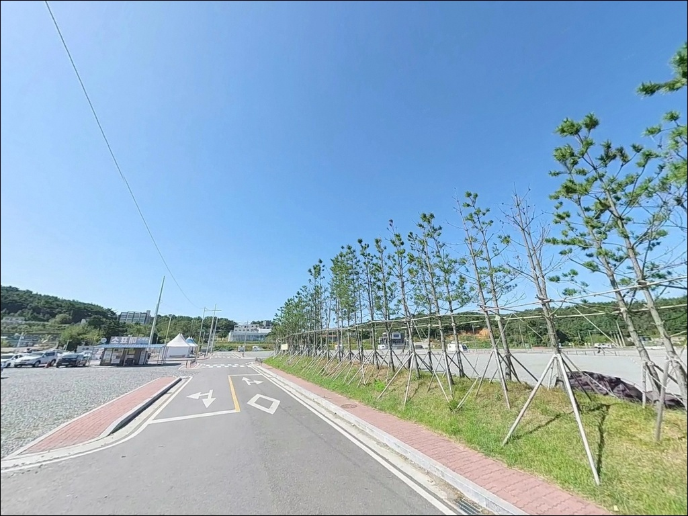
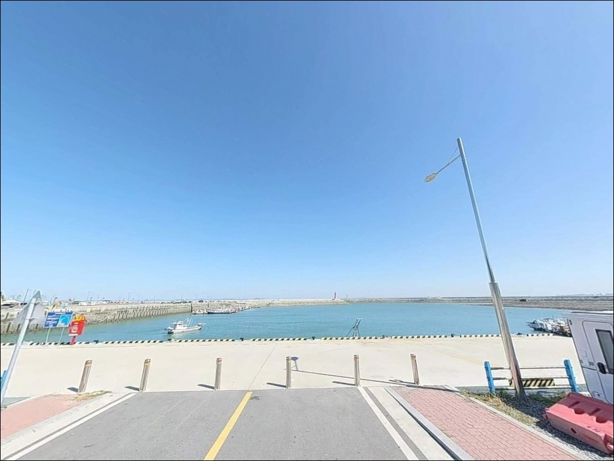
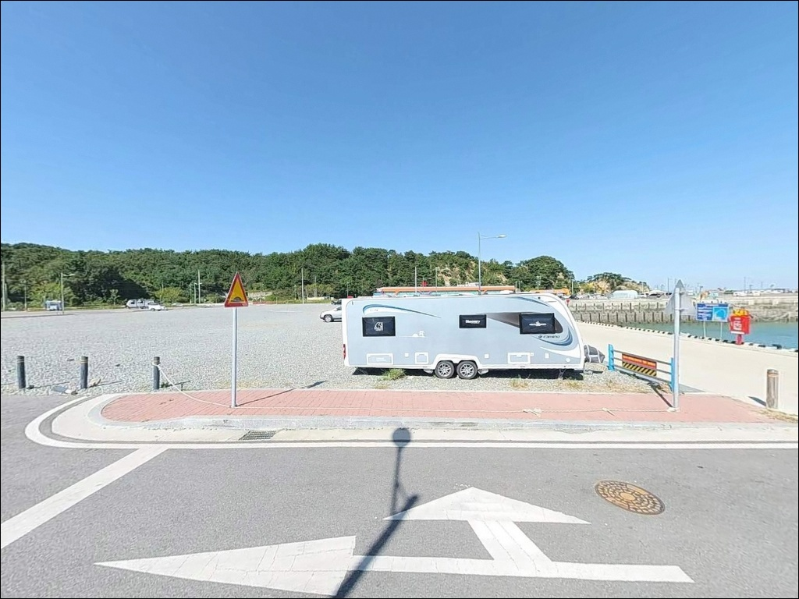
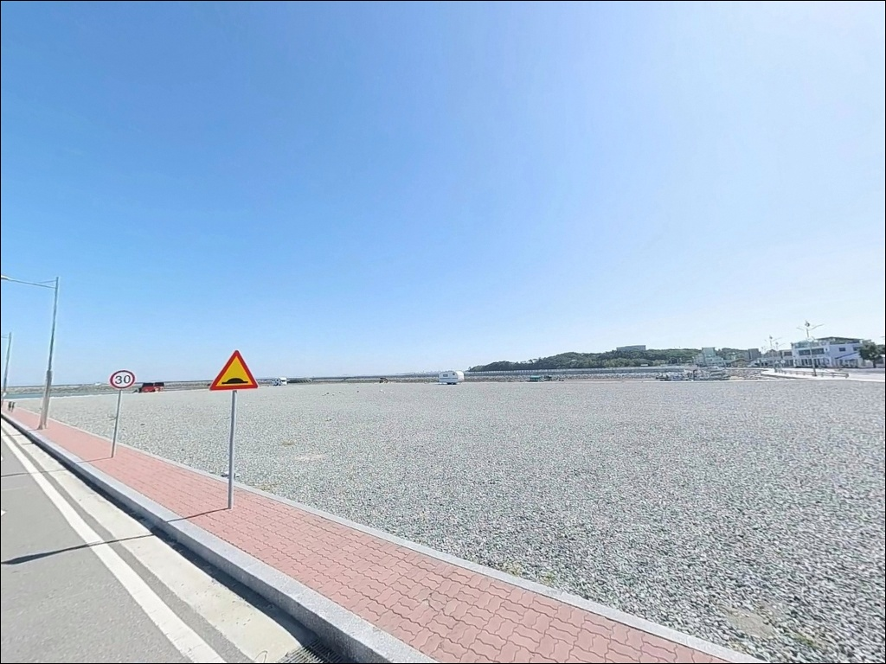

장고항, 충남 당진시 잔잔한 물결과 어울리는 차박, 낚시 한적한 포인트
이 페이지에는 광고(제휴 링크 포함)가 있으며, 광고 링크를 통해 구매하면 운영자가 판매 수익 또는 수수료를 받을 수 있습니다. 포인트 사진: 카카오맵 스카이뷰·로드뷰. 이 페이지의 지도·사진 이미지는 카카오맵의 실제 서비스 이미지와 다를 수 있습니다.


포인트 안내
장고항
충남 당진시 석문면 장고항리 1452
장고항에서 가장 많이 하는 실수는
서해 물때를 확인하지 않고
방파제 끝단에 원투 자리를 잡는 것입니다.
사리 전후 조류가 강해지는 시간대에는
봉돌이 흘러버려 채비가 자리를 지키지 못하고,
손실이 쌓이면서 낚시 자체가 불가능해지는 상황이
생깁니다.
석문방조제와 왜목마을 사이에 자리한 장고항은
2008년 국가어항으로 지정된 서해 방파제 낚시 거점입니다.
방파제 구조가 잘 정비되어 있고
선상 출조 선단도 다수 운영되는 곳으로,
원투낚시부터 선상 출조까지 여러 방식을
한 곳에서 선택할 수 있는 구조입니다.
이 글은 장고항의 방파제 구조, 진입 여건,
낚시 방식별 공략 조건, 차박 체류 판단 기준에 집중합니다.
조황 단정이나 특정 어종 보장은
이 글의 범위에 포함되지 않습니다.

1. 진입 동선과 주차 여건
장고항로를 따라 항구까지 차량 접근이
무리 없이 가능한 구조입니다.
국가어항으로 지정·개발된 이후
진입 도로는 포장도로로 정비된 상태이며,
대형 SUV나 캠핑 차량도 진입 및 회차에는
큰 어려움이 없을 가능성이 높습니다.
항내 매립 부지가 넓게 확보되어 있어
주차 공간은 여유로운 편입니다.
방파제 인근 항내 주차장 구역,
수산물 유통센터 인근 공터 등이
주요 주차 후보로 활용되고 있으며,
충청남도 공식 안내에도
장고항 주차시설이 무료로 표기되어 있습니다.
항구인 만큼 어선 접안 구역과
하역 동선이 공존하는 공간입니다.
주차 후에는 작업선 이동을 방해하지 않는
위치인지 먼저 확인하는 것이
기본 매너이며,
선착장 진입로 쪽 주차는
어선 출입 시간과 겹치지 않도록
주의하는 편이 좋습니다.

2. 차박 환경과 야간 체류 여건
장고항은 관광 어항 성격을 겸하는 곳으로,
회센터와 횟집, 선단 업체 등 상업시설이
항 주변에 밀집되어 있습니다.
야간에도 어느 정도의 불빛과 차량 왕래가 있어,
완전히 조용한 체류 환경을 기대하기는 어려운 편입니다.
낚시 후 짧게 대기하는 용도로는 나쁘지 않지만,
프라이버시를 원한다면 환경을 감안해야 합니다.
항내 조명은 선단 업체와 시설물 중심으로
일부 설치되어 있으나,
방파제 말단 쪽으로 갈수록 어두워지는 구간이 있습니다.
야간 낚시 시에는 개인 헤드랜턴이 필수이며,
방파제 끝단 이동 시 조명 없이는 미끄럼 위험이
높아집니다.
항내 매립 부지는 차박 수요가 높은 공간이지만,
야영·캠핑을 제한하는 안내가 설치된 이력이 있습니다.
방문 전 최근 상황을 검색해 두고,
현장 도착 후 안내판을 직접 확인하는 순서가
차박 허용 여부를 가장 확실하게 파악하는 방법입니다.


3. 주변 편의시설 및 인프라 현황
항내에 이마트24 편의점이 운영 중입니다.
선단 업체 공지에 승선자 명부 비치 장소로
직접 언급될 만큼 접근이 편리한 위치이며,
식수·간식·낚시 소모품은 항내에서 해결 가능한 편입니다.
출조 전후로 이용하기 좋은 위치입니다.
회센터와 횟집이 항 주변에 여러 곳 운영 중이며,
장고항 실치마을이 인접해 있습니다.
계절에 따라 실치 등 신선한 수산물 구매도 가능한 환경으로,
낚시 후 현지 식사를 원하는 경우
별도 이동 없이 항 주변에서 해결이 됩니다.
왜목해수욕장까지는 약 4km 거리이며,
해돋이·해넘이 명소인 왜목마을이 인근에 있어
낚시와 관광을 병행하는 동선 구성이 가능합니다.
대호방조제는 약 8km 거리로,
드라이브를 겸한 대체 낚시 포인트로
이동 범위 안에 있습니다.

4. 서해 방파제 출조 전 반드시 확인해야 할 것들
서해 방파제 낚시에서 가장 먼저 확인할 것은
물때입니다.
장고항은 석문방조제와 인접한 서해 포인트로,
조수간만 차가 크게 작용하는 구조입니다.
바다타임에서 해당 날의 물때를 미리 확인하고,
조금 전후 또는 들물 초입 타이밍을
기준으로 출발 시각을 정하는 것이 기본입니다.
간조 시에는 방파제 주변 일부 구간에서
수심이 크게 낮아질 수 있습니다.
입장 시각을 물때에 맞추지 않으면
자리를 잡고도 채비 운용이 여의치 않은 상황이
생길 수 있습니다.
서풍 계열 바람이 강한 날에는
외항 쪽 노출이 커지므로 기상 확인도 필수입니다.
방파제 테트라포드 구간은 낙상 위험이 있어
석축이나 평탄한 구역을 우선 이용하는 편이
안전합니다.
야간 낚시 시에는 구명조끼와 헤드랜턴이 필수이며,
선박 접안 구역 인근에는 낚시 채비가 닿지 않도록
자리 선정에 주의가 필요합니다.
채비 손실이 잦은 지형 특성상
여분 봉돌과 바늘은 충분히 챙기는 편이 좋습니다.

5. 지형 구조로 본 낚시 여건 분석
장고항은 외항과 내항이 명확하게 나뉜
전형적인 어항 방파제 구조입니다.
방파제가 외항 방향으로 길게 뻗어 있으며,
끝단 쪽으로 갈수록 수심 변화가 생기는 구간이
있을 가능성이 높습니다.
방파제 외항 끝단과 수로가 만나는 지점이
이 포인트에서 먼저 탐색해볼 자리입니다.
서해안 특성상 전반적인 수심은 완만한 편이지만,
방파제 끝단이나 항 입구 수로 주변에서는
수심이 비교적 빠르게 깊어지는 구조일 수 있습니다.
석문방조제와 인접한 위치 특성상
수문 개방 시기에는 인근 조류가 평소보다 강해질
가능성이 있습니다.
출조 당일 조류 세기를 체감한 뒤
봉돌 무게를 조정하는 방식이 유효합니다.
바닥 지형은 펄과 모래가 혼합된 구조에
갯바위·돌틈 구간이 일부 공존하는 것으로 보입니다.
이런 복합 지형은 다양한 어종의 은신처 역할을 하며,
원투 채비가 바닥에 닿는 느낌으로
밑걸림 빈도를 파악하면
지형을 읽는 데 도움이 됩니다.
최신 조황은 출조 전 반드시 검색해 보시기 바랍니다.


6. 장고항에 어울리는 낚시 스타일
방파제 원투낚시는 이 포인트에서 가장 보편적인 방식입니다.
방파제 주차장 인근과 외항 끝단 구간이
원투 자리로 활용도가 높은 편이며,
들물이 들어오는 방향으로 봉돌이 자리를 잡는 타이밍이
반응을 기대해볼 수 있는 시간대입니다.
우럭·노래미·붕장어가
이 지형에서 기대해볼 수 있는 어종입니다.
루어낚시도 외항 끝단과 테트라 주변에서
노려볼 만한 방식입니다.
우럭·광어를 대상으로 한 루어와
시즌에 따른 에깅을 병행하는 구성이
이 포인트 구조와 잘 맞습니다.
갑오징어와 주꾸미는 금어기 이후 9월 전후부터
시즌이 형성되는 것이 일반적입니다.
찌낚시나 생활낚시는 내항 쪽 잔잔한 구간에서
가족 단위 방문 시 어울리는 방식입니다.
장고항은 선상 출조 선단도 다수 운영 중으로,
광어 다운샷, 우럭 생미끼, 농어 루어 등
방파제와는 다른 수역을 노릴 수 있습니다.
선단 정보는 출조 전 별도로
최신 출조 예약 현황을 직접 확인하는 것이 좋습니다.

7. 대안 포인트와 플랜 B 동선
장고항 조류가 너무 강하거나
주차 공간이 여의치 않을 때
가장 가까운 대안은 왜목항입니다.
장고항에서 북쪽으로 인접한 거리에 있으며,
노적봉 갯바위 낚시와 좌대낚시를
함께 운용할 수 있는 포인트입니다.
장고항 조황이 아쉬운 날,
가장 빠르게 이동할 수 있는 대안 선택지입니다.
석문방조제는 장고항과 직접 인접한
서해안 대표 낚시 포인트입니다.
방조제 구간이 길고 다양한 진입 자리가 있어,
원투낚시 중심으로 접근하기 좋은 구간입니다.
장고항에서 조황이 아쉬울 때 바로 이동해볼
현실적인 선택지입니다.
차박 대안으로는 왜목마을 주변을 고려해볼 수 있습니다.
해돋이·해넘이 명소로 정비된 공간이며,
장고항보다 상업시설 밀집도가 낮아
더 조용한 분위기를 원하는 경우에 적합합니다.
단, 야영·차박 허용 여부는 현장 확인이 우선이며,
대호방조제 방면도 드라이브 겸
대체 낚시 동선으로 활용 가능한 범위에 있습니다.

물때 하나 챙기면
장고항은 꽤 실용적인 서해 방파제입니다
원투낚시나 서해 방파제 낚시를 즐기는 낚시인에게
장고항은 진입 부담이 낮고
편의시설이 갖춰진 실용적인 포인트입니다.
항내 이마트24, 회센터, 선단 업체까지
한 자리에 모여 있어
당일 치기로도 무난하게 소화되는 구조입니다.
다만 서해 물때를 계산하지 않고 방문하면
기대와 다른 상황을 맞닥뜨릴 수 있습니다.
사리 전후 강한 조류에는 원투 채비가
자리를 지키지 못하는 경우가 있어,
출조 당일 바다타임으로 물때를 확인하는 것이
이 포인트에서 가장 먼저 해야 할 준비입니다.
차박 목적이라면 현장 안내판 확인이 선행되어야 하고,
관광 어항 특성상 불빛과 소음이 남아 있어
조용한 밤을 원한다면
인근 왜목마을 방향을 함께 고려하는 편이 낫습니다.
물때 하나 제대로 챙기고 방파제 끝에 서면,
서해 원투의 묵직한 손맛과 차박 하룻밤을
같이 묶어가기에 나쁘지 않은 곳입니다.